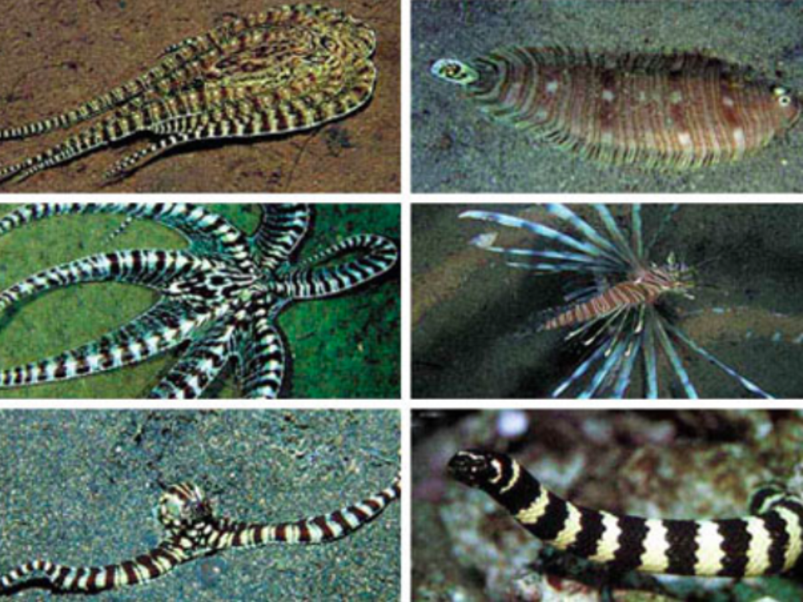
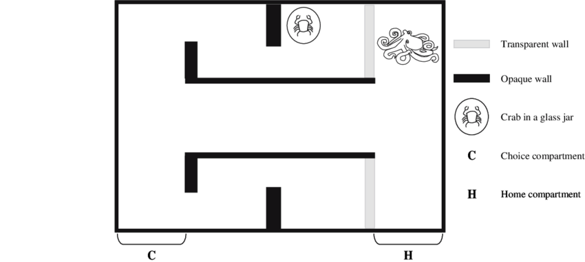

Intelligence de la pieuvre
Pour comprendre l’intelligence de la pieuvre, il faut tout d’abord s’intéresser à ses comportements. Elles sont les reines du camouflage, certaines espèces font preuves d’une grande ingéniosité. Un type de pieuvre par exemple ce déplace avec une noix de coco pour pouvoir se protéger ou capturer ses proies. Une autre, la pieuvre mimétique, imite le comportement d’espèces venimeuses pour dissuader les prédateurs de l’attaquer, ainsi elle peut donc se camoufler en rascasse volante ou même en serpent de mer.

En contexte de laboratoire, les chercheurs ont découvert des capacités étonnantes, elle est capable d’ouvrir un bocal, notamment pour s’y échapper ou pour y trouver une récompense. Elle peut également traverser un labyrinthe et reconnaitre des environnements familiers. Elle est aussi capable de différencier des individus et adapter son comportement selon la personne qu’elle rencontre. Une expérience à été mené dans l’aquarium de Seattle en 2010 pour le prouver. Elle mettait en scène un gentil gardien qui venait nourrir les pieuvres et un méchant gardien qui venait les piquer avec un bâton. Après deux semaines, tous les poulpes adoptaient un comportement différent avec ces deux gardiens.
Mais d’où viennent cette multitude de stratégies ? Les apprennent-t-elles, ou les produisent-elles par instinct ? Autrement dit quelle est la part d’acquis et la part d’inné ?
Les scientifiques ont observé que le poulpe utilise instinctivement ses tentacules pour dévisser un bocal, il agit donc à l’instinct. Mais au fur et à mesure qu’il répète l’opération sa vitesse est de plus en plus rapide, l’amélioration de ses compétences est donc acquise.

L’apprentissage de l’octopus peut être conditionné par son environnement spatial et social. L’expérience suivante l’illustre bien. Deux groupes deux poulpes sont placés de part et d’autre d’une vitre. On donne au premier groupe deux types de balles qu’ils doivent trier. On remarque que le second groupe après avoir observer leurs pairs, auront plus de facilité réaliser la tâche demandée, ils sont donc capable d’apprentissage par l’observation.
Il arrive aussi que le poulpe nous surprenne. Lors d’une expérience où un poisson a été placé dans un biberon, on attend à ce qu’il l’ouvre en dévissant le bouchon. Cependant au cours de l’expérience et ses répétitions, le poulpe aura toujours arracher la tétine grâce à ses tentacules pour ouvrir le biberon. Il va donc privilégier des méthodes différentes pour s’adapter à plusieurs situations. On notera d’ailleurs que sous l’eau, un homme adulte n’avait pas la force nécessaire pour détacher la tétine du bouchon.
OCTOLAND